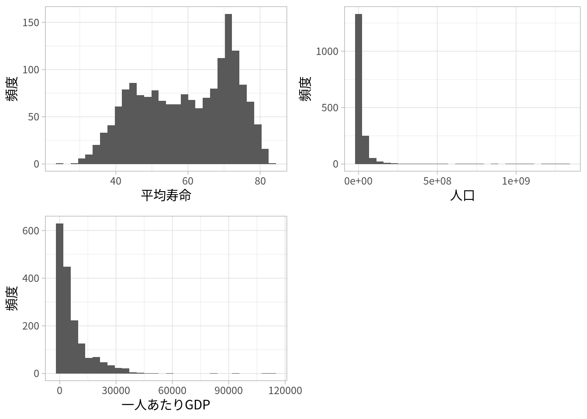

R
10 発展的なグラフ
より発展敵がグラフの書き方を見つけ次第、追加していきます。
10.1 グループごとの複数のグラフ
グループごとに色分けをすることで、グループごとの分布や散布図を可視化する方法は確認してきました。しかし、それぞれ別のグラフとして作図するほうが見やすい場合もあるかもしれません。
facet_wrap(~ ...)でグループの変数を指定して、グループごとにグラフを作ります。- ラベル名の変更は面倒なので、後ほど触れます。
Python
sns.FacetGrid()でグリッドgridを作成します。- 使用するデータフレームとグループの変数を指定します。
- また、
col_warp=で何枚のグラフごとに改行するかを決めます。
map()メソッドでグラフpを作成します。- 最初に、グラフを作る関数を指定します（
()を付けないことに注意）。 - 次に、作図に使う変数名を指定します。
- 最初に、グラフを作る関数を指定します（
set()メソッドで軸ラベルを指定します。
なお、seabornでは次のような関数を使うことで、簡便にグリッドを作成し、グラフを作図できます。
seabornの2通りの書き方
seabornでは異なるグラフを同じ関数で作図していたところがあります。この図のように、いくつかの関数をまとめた関数があり、それを使っていました。

10.2 異なる種類のグラフ
そもそも異なる種類のグラフを一つにまとめたいこともあります。例えば、平均寿命、人口、一人あたりGDPの分布のグラフを一つにまとめます。
ggplot2の場合、gridExtraを使う方法とpatchworkを使う方法を紹介しますが、いずれの場合も複数のグラフを作成して、最後に一つにまとめます。
R
p1 <- ggplot(df_gap) +
geom_histogram(aes(x = lifeExp)) +
labs(x = "平均寿命", y = "頻度")
p2 <- ggplot(df_gap) +
geom_histogram(aes(x = pop)) +
labs(x = "人口", y = "頻度")
p3 <- ggplot(df_gap) +
geom_histogram(aes(x = gdpPercap)) +
labs(x = "一人あたりGDP", y = "頻度")
library(gridExtra)
grid.arrange(p1, p2, p3, ncol = 2) 
patchworkの方が、より簡単に柔軟なレイアウトができるように思います。
seabornの場合はmaplotlibのsubplots()を使います。
Python
fig, axs = plt.subplots(2, 2)
plt.subplots_adjust(wspace=0.3, hspace=0.4)
sns.histplot(df_gap, x ="lifeExp", ax=axs[0,0])
axs[0,0].set_xlabel("平均寿命")
axs[0,0].set_ylabel("頻度")
sns.histplot(df_gap, x ="pop", ax=axs[0,1])
axs[0,1].set_xlabel("人口")
axs[0,1].set_ylabel("頻度")
sns.histplot(df_gap, x ="gdpPercap", ax=axs[1,0])
axs[1,0].set_xlabel("一人あたりGDP")
axs[1,0].set_ylabel("頻度")
axs[1,1].remove()plt.subplots(n, m)でグリッドを作ります。nが行の数、mが列の数になります。つまり、m個ごとに改行し、n段のグリッドを作ります。
axs[i,j]はi+1行j+1列のグリッドになり、これを作図する関数の中でax=と指定することで、そのグリッドにグラフを作成します。- プログラミングでは
0から始まるのでaxs[0,0]は1行1列目（左上）のグリッドを意味しています。
- プログラミングでは
- 右下のグリッド（2行2列目）はいらないので
remove()メソッドで削除します。
10.3 対数目盛り
ところで、以前、一人あたりGDPの分布が歪んでいるという話をしました。つまり、多くの観察では小さい値を取り、ごく一部の観察は異様に大きな値を取るような変数でした。
この場合、対数化することで見やすいグラフになることがあります。
また、散布図で対数化することで直線的関係が見えることもあります（すなわち、実際の数において対数の関係にあったということ）。